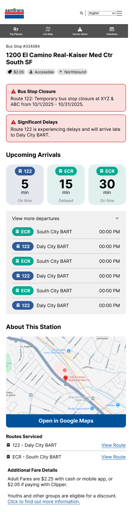
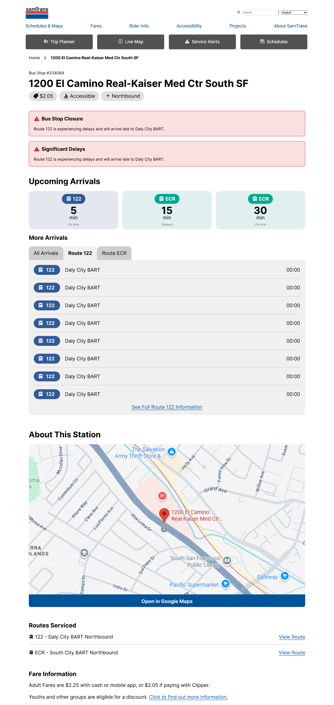
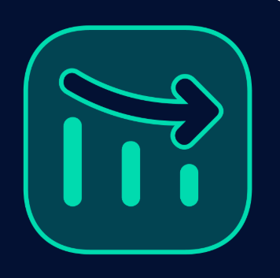
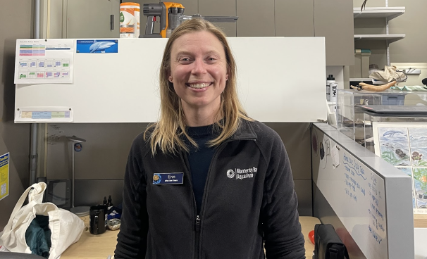
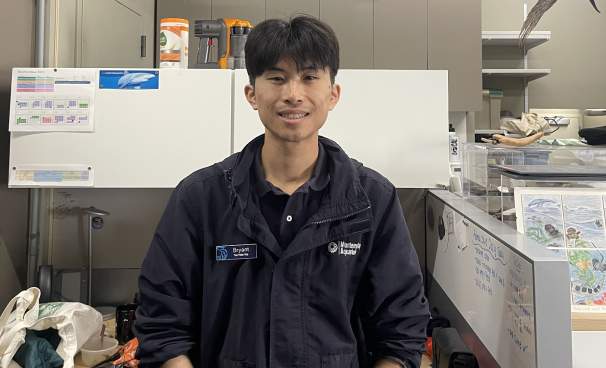
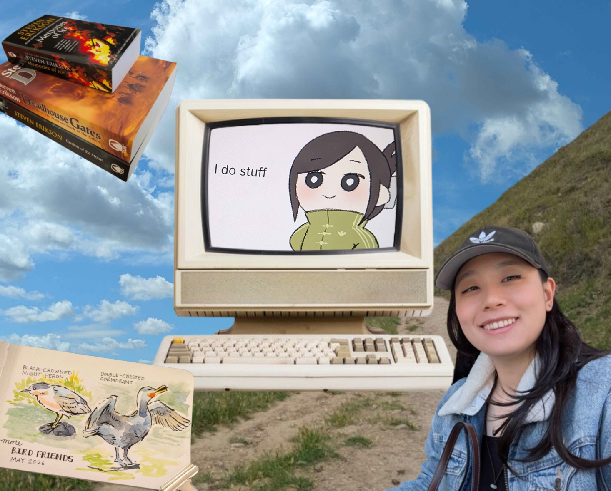

The highest-leverage path was to identify low-effort, high-impact UI areas and standardize them clearly. The UI Enhancements Project — a platform audit, 51 pages of notes, inconsistency documentation, and design system standardization across 7 major UI areas.
The issues clustered into four buckets: pattern discrepancies, component variability, layout irregularities, and UX gaps. We scoped the first pass to UI standardization so the team could fix the foundation before tackling deeper workflow changes.
The documentation became the team's cross-functional source of truth: a shared playbook PMs and engineers could use to prioritize, implement, and QA design system cleanup.
Remove ambiguous options from documentation instead of asking teams to choose between too many valid-looking variants.
Make alert type, placement, and dismiss behavior part of the component definition, not an implementation detail.
"I felt genuinely proud to work on something as foundational as a platform's design system. My manager gave me loose guidance and the support I needed, but also trusted me enough to decide how to investigate the problem, organize the work, and define a path forward. Because Branch had not had a formal design team before my manager and me, I was often the design voice in cross-functional conversations with PMs and engineers. It pushed me to explain design decisions clearly, understand technical constraints, and build confidence in my own judgment."
The team had designed several nice-to-have features before agreeing on what the core platform needed to do first.
Every intern cohort inherited a messy Figma file, unclear priorities, and little documentation from the group before them.
Rather than designing on top of the existing mess, I decided to start from scratch — new Figma file, new site map, clean slate. No one else wanted to do this because it delayed the "actual design work," but building on disorganized foundations would have made everything worse downstream.
The biggest bottleneck wasn't design skill — it was organizational clarity. Once I established who was doing what, who to go to with questions, and how design and engineering would stay in sync, velocity increased significantly.
Created a repeatable rhythm for critique, delegation, and file hygiene within a rotating intern team.
Turned an accidental engineering ping into a recurring design-engineering communication channel.
"I found that in groups without strong direction, I default to asking questions, creating actionable items, and setting tasks — which tends to make me the lead. This internship was the first time I did that consciously and at scale. The hard part wasn't the design; it was navigating a CEO who thought big-picture and wasn't familiar with UX process, while still moving the project forward."
Bay Archive — hi-fi designs for two user flows (requester + admin), a developer handoff doc, and a full final report. Scoped for potential implementation by UCI's Software Engineering program.
This activity helped us gain context on how similar organizations organize their respective databases. We took note of patterns that we liked, as well as things to avoid. In particular, we started realizing that having a combined database and borrowing process was pretty similar to an online shopping experience.


We expected broad categories like "fish" or "mammal." MBA employees think taxonomically — genus, family, scientific names. This completely changed our search and filter structure.
"The card sort was the most valuable hour of the whole project. We assumed we understood how the artifacts were organized — we were wrong. I now start every project asking: what do we think we know that we should actually verify?"

Open to full-time UX design & digital communication roles! Reach out: juliewang0396@gmail.com